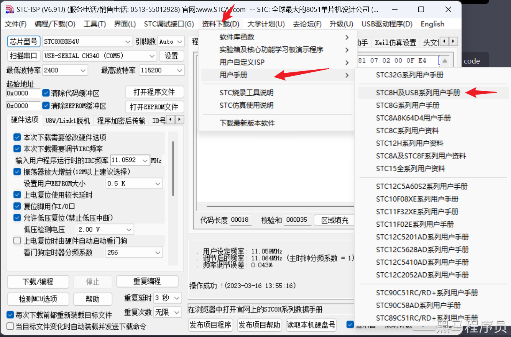
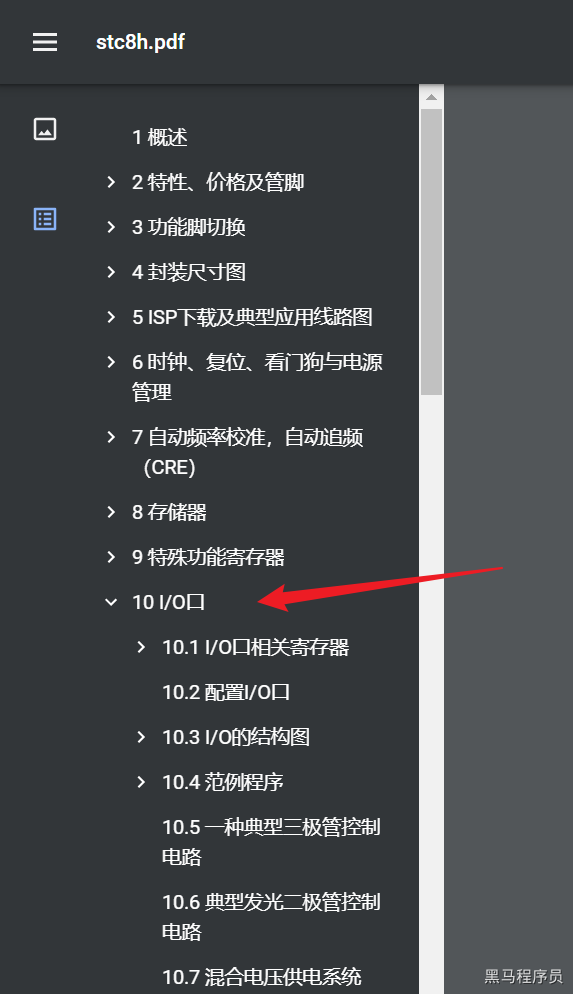
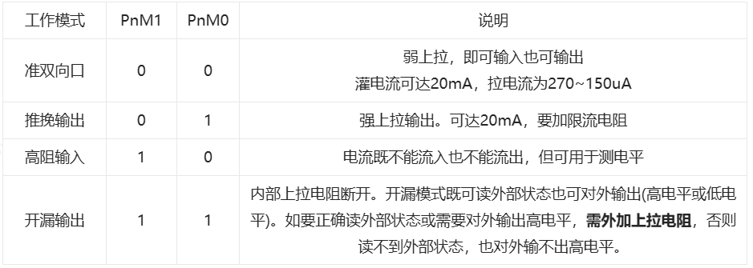
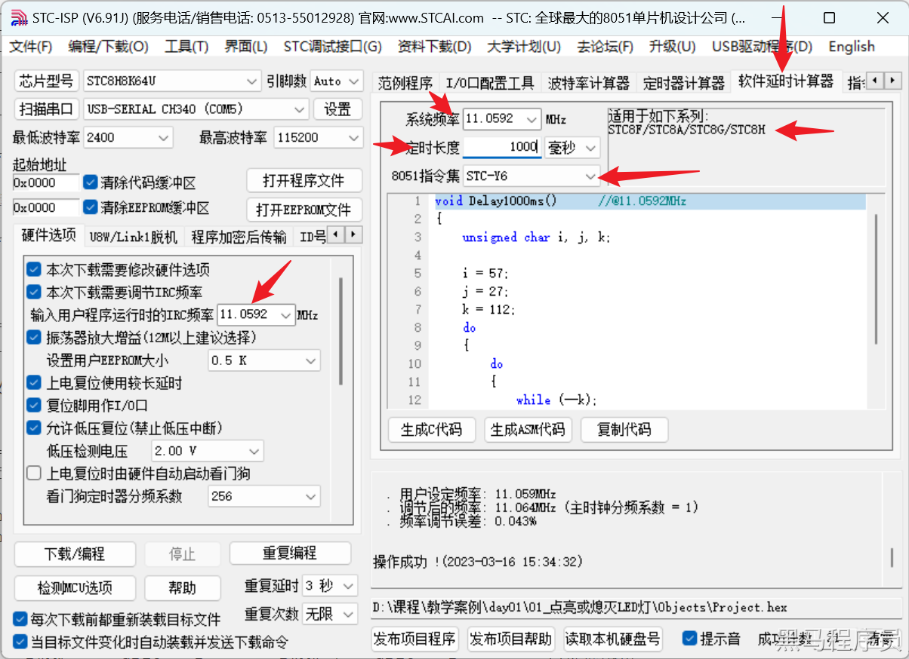

<!DOCTYPE lake>
<h2 data-lake-id="sBwQl" id="sBwQl"><span data-lake-id="u273924e5" id="u273924e5">学习目标</span></h2><ol list="uecca6cee"><li data-lake-id="uc04c70ec" fid="ub2920a8c" id="uc04c70ec"><span data-lake-id="ua3d4803b" id="ua3d4803b">了解C51的GPIO的模式</span></li><li data-lake-id="u7130f8aa" fid="ub2920a8c" id="u7130f8aa"><span data-lake-id="u73d806f4" id="u73d806f4">熟悉芯片手册的阅读</span></li><li data-lake-id="u669723d4" fid="ub2920a8c" id="u669723d4"><span data-lake-id="uc28f112d" id="uc28f112d">了解如何将手册中的要求变为代码实现</span></li></ol><h2 data-lake-id="prZG6" id="prZG6"><span data-lake-id="u629252ed" id="u629252ed">学习内容</span></h2><h3 data-lake-id="ZRBV5" id="ZRBV5"><span data-lake-id="uffc55328" id="uffc55328">理解电灯案例的代码</span></h3><span class="yuque-card-unsupported">[codeblock]</span><ul list="u697af496"><li data-lake-id="u5ebd6a28" fid="u4c52591f" id="u5ebd6a28"><code data-lake-id="u88e00526" id="u88e00526"><span data-lake-id="u518908ad" id="u518908ad">#include "STC8H.H"</span></code><span data-lake-id="udacf75fc" id="udacf75fc"> 引入头文件</span></li><li data-lake-id="ub531dd62" fid="u4c52591f" id="ub531dd62"><code data-lake-id="u58bb2e2d" id="u58bb2e2d"><span data-lake-id="uf781f834" id="uf781f834">P5M0 = 0x00;P5M1 = 0x00;</span></code><span data-lake-id="udbb60e5a" id="udbb60e5a">配置引脚模式</span></li><li data-lake-id="u5770171b" fid="u4c52591f" id="u5770171b"><code data-lake-id="ua0adb523" id="ua0adb523"><span data-lake-id="u839bdab4" id="u839bdab4">P53=1;</span></code><span data-lake-id="u1f6bf8a7" id="u1f6bf8a7">配置IO引脚的电平（1为高电平，0为低电平）</span></li></ul><h3 data-lake-id="K78UB" id="K78UB"><span data-lake-id="u5f499456" id="u5f499456">头文件STC8H.H</span></h3><p data-lake-id="u1e3bb64b" id="u1e3bb64b"><span data-lake-id="u1cb238e3" id="u1cb238e3">针对 STC8H 系列芯片的头文件，如果Keil软件没有配置STC8环境，此处是无法导入的。</span></p><p data-lake-id="ucf87d703" id="ucf87d703"><code data-lake-id="u02d5bc7d" id="u02d5bc7d"><span data-lake-id="uc3fee8d5" id="uc3fee8d5">STC8H.H</span></code><span data-lake-id="u9c79d709" id="u9c79d709">文件的存储目录，在Keil安装目录下的 </span><code data-lake-id="u19e20bd5" id="u19e20bd5"><span data-lake-id="ubd2ab707" id="ubd2ab707">C51\INC\STC</span></code><span data-lake-id="u9ebb5ec8" id="u9ebb5ec8">文件夹下。内部有其他STC芯片的头文件，如果你用的是其他芯片，则</span><code data-lake-id="u5bd7a0d1" id="u5bd7a0d1"><span data-lake-id="ue22c36c4" id="ue22c36c4">include</span></code><span data-lake-id="ufa60e611" id="ufa60e611">对应的头文件。</span></p><h3 data-lake-id="tI9VZ" id="tI9VZ"><span data-lake-id="u30c211bb" id="u30c211bb">引脚工作模式</span></h3><ol list="uedf18351"><li data-lake-id="uc1e8892d" fid="u9cc70f3e" id="uc1e8892d"><span data-lake-id="ueaef1beb" id="ueaef1beb">STC8H文档下载。通过</span><code data-lake-id="u653e9b54" id="u653e9b54"><span data-lake-id="u793dad6e" id="u793dad6e">STC-ISP</span></code><span data-lake-id="ub6f790c1" id="ub6f790c1">软件进行资料下载。</span></li><li data-lake-id="u87f5d3fe" fid="u9cc70f3e" id="u87f5d3fe"><span data-lake-id="uf8d24fcc" id="uf8d24fcc">打开STC8H用户手册。跳转到`I/O`口</span></li></ol><p data-lake-id="u38477c84" id="u38477c84"><span data-lake-id="u0e9250c2" id="u0e9250c2">其中我们可以通过手册获得一些信息：</span></p><ul data-lake-indent="1" list="ua777612d"><li data-lake-id="u684c7205" fid="uaeee1129" id="u684c7205"><span data-lake-id="u71f6676d" id="u71f6676d">1个端口对应8个引脚</span></li><li data-lake-id="u4e524d1f" fid="uaeee1129" id="u4e524d1f"><span data-lake-id="u66614ee0" id="u66614ee0">每个端口都由一个寄存器控制</span></li><li data-lake-id="u225492ac" fid="uaeee1129" id="u225492ac"><span data-lake-id="u77b8ac87" id="u77b8ac87">系列不同，端口数量不同</span></li><li data-lake-id="ucbe9a558" fid="uaeee1129" id="ucbe9a558"><span data-lake-id="u5ffb8367" id="u5ffb8367">每个引脚可配置4种不同的工作模式</span></li></ul><p data-lake-id="u8d70460c" id="u8d70460c"><span data-lake-id="u2b55b55a" id="u2b55b55a">IO口的工作模式：</span></p><p data-lake-id="ue05033f2" id="ue05033f2"></p><p data-lake-id="uf8c494f5" id="uf8c494f5"><span data-lake-id="u279dfd42" id="u279dfd42">当前我们电灯是要控制P5端口的3号引脚，也就是P53这个引脚。理论上只需要设置这个引脚的工作模式即可。</span></p><span class="yuque-card-unsupported">[codeblock]</span><ul list="ub5a08317"><li data-lake-id="u41dd393c" fid="u8a5e884b" id="u41dd393c"><span data-lake-id="ud57c74f2" id="ud57c74f2">P5表示的是5号端口</span></li><li data-lake-id="ue11ed409" fid="u8a5e884b" id="ue11ed409"><span data-lake-id="u46d8f1fc" id="u46d8f1fc">0x08表示的是3号引脚，对应二进制 </span><code data-lake-id="u3d12a420" id="u3d12a420"><span data-lake-id="ue65de1ad" id="ue65de1ad">0000 1000</span></code></li></ul><h3 data-lake-id="edLyk" id="edLyk"><span data-lake-id="u57f6899d" id="u57f6899d">软延时操作</span></h3><p data-lake-id="u8265c49a" id="u8265c49a"><span data-lake-id="u5870c3e5" id="u5870c3e5">软延时指的是通过代码来进行延时睡眠操作。我们可以借助工具来提供软延时的代码。</span></p><p data-lake-id="uab601660" id="uab601660"><span data-lake-id="uaccbddd1" id="uaccbddd1">打开</span><code data-lake-id="uedbf801f" id="uedbf801f"><span data-lake-id="u3c3aa8cf" id="u3c3aa8cf">STC-ISP</span></code><span data-lake-id="u9887b7ed" id="u9887b7ed">工具，进行如下操作：</span></p><p data-lake-id="ue468ced0" id="ue468ced0"></p><p data-lake-id="uda5ac117" id="uda5ac117"><span data-lake-id="ua5cee58a" id="ua5cee58a">如图所示我们关注几个点：</span></p><ul list="u1c31e151"><li data-lake-id="u893c5165" fid="ufa56f7a1" id="u893c5165"><span data-lake-id="u64f47d70" id="u64f47d70">系统频率</span></li><li data-lake-id="u242bbe27" fid="ufa56f7a1" id="u242bbe27"><span data-lake-id="u4643fedc" id="u4643fedc">睡眠时长</span></li><li data-lake-id="u479311ff" fid="ufa56f7a1" id="u479311ff"><span data-lake-id="u9eeaef76" id="u9eeaef76">指令集</span></li></ul><p data-lake-id="u6040c804" id="u6040c804"><span data-lake-id="u258fc91c" id="u258fc91c">指令集主要针对的是芯片型号，选择不同型号，旁边会提示是否包含你所开发的芯片，我们在此使用STC-Y6，因为我吗使用的是STC8H的系列。</span></p><p data-lake-id="u72da7dee" id="u72da7dee"><span data-lake-id="u9521135a" id="u9521135a">睡眠时长，是你希望提供的睡眠时间长度，根据实际情况而定。</span></p><p data-lake-id="u76d46fe2" id="u76d46fe2"><span data-lake-id="udcbd210f" id="udcbd210f">系统频率，需要注意的是需要和烧录频率一致，否则会出现时间不匹配问题。</span></p><p data-lake-id="u9e1dd91b" id="u9e1dd91b"><span data-lake-id="ufd0f5273" id="ufd0f5273">根据以上操作我们可以实现，LED每隔一秒钟闪烁的逻辑。</span></p>